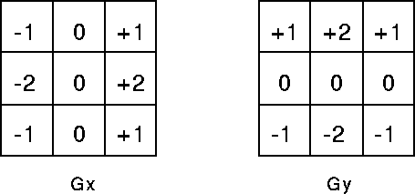
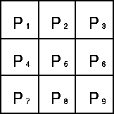
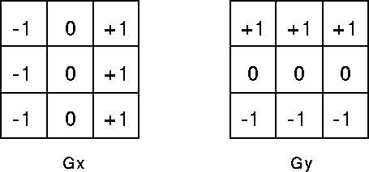

Brief Description
The Sobel operator performs a 2-D spatial gradient measurement on an image
and so emphasizes regions of high spatial frequency that correspond to edges.
Typically it is used to find the approximate absolute gradient magnitude at each point
in an input grayscale image.
How It Works
In theory at least, the operator consists of a pair of 3Χ3 convolution kernels as shown in Figure 1.
One kernel is simply the other rotated by 90°. This is very similar to the Roberts Cross operator.

Figure 1 Sobel convolution kernels
These kernels are designed to respond maximally to edges running vertically and horizontally relative to
the pixel grid, one kernel for each of the two perpendicular orientations.
The kernels can be applied separately to the input image, to produce separate measurements
of the gradient component in each orientation (call these Gx and Gy).
These can then be combined together to find the absolute magnitude of
the gradient at each point andthe orientation of that gradient.
The gradient magnitude is given by:
|G| = √Gx2Gy2
Typically, an approximate magnitude is computed using:
|G| = |Gx| = |Gy|
which is much faster to compute.
The angle of orientation of the edge (relative to the pixel grid) giving rise
to the spatial gradient is given by:
θ = arctan(Gy/Gx)
In this case, orientation 0 is taken to mean that the direction of maximum contrast
from black to white runs from left to right on the image,
and other angles are measured anti-clockwise from this.
Often, this absolute magnitude is the only output the user
sees --- the two components of the gradient are conveniently computed
and added in a single pass over the input image using the
pseudo-convolution operator shown in Figure 2.

Figure 2 Pseudo-convolution kernels used to quickly compute approximate gradient magnitude
Using this kernel the approximate magnitude is given by:
|G| = |(P1+2×P2+P3| - (P7+2×P8+P9)| + |(P3+2×P6+P9| - (P1+2×P4+P7)|
uidelines for Use
The Sobel operator is slower to compute than the Roberts Cross operator,
but its larger convolution kernel smooths the input image to a greater extent and so makes
the operator less sensitive to noise.
The operator also generally produces considerably higher output values for similar edges,
compared with the Roberts Cross.
As with the Roberts Cross operator, output values from the operator can easily overflow
the maximum allowed pixel value for image types that
only support smallish integer pixel values (e.g. 8-bit integer images).
When this happens the standard practice is to simply set overflowing output pixels
to the maximum allowed value.
The problem can be avoided by using an image type
that supports pixel values with a larger range.
Natural edges in images often lead to lines in the output image that are several pixels wide
due to the smoothing effect of the Sobel operator.
Some thinning may be desirable to counter this. Failing that,
some sort of hysteresis ridge tracking could be used as in the Canny operator.
Common Variants
A related operator is the Prewitt gradient edge detector
(not to be confused with the Prewitt compass edge detector).
This works in a very similar way to the Sobel operator but uses slightly different kernels,
as shown in Figure 3.
This kernel produces similar results to the Sobel, but is not as isotropic in its response.

Figure 3 Masks for the Prewitt gradient edge detector.